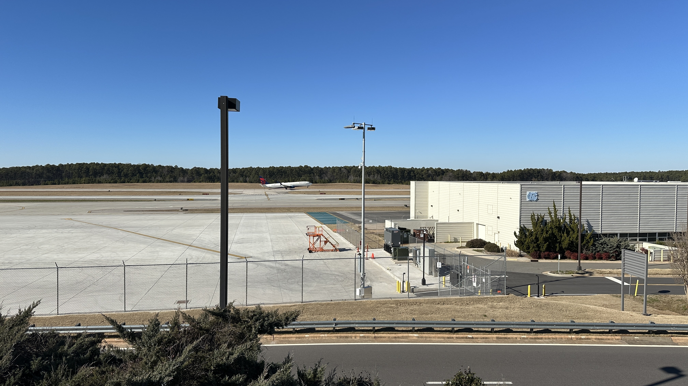
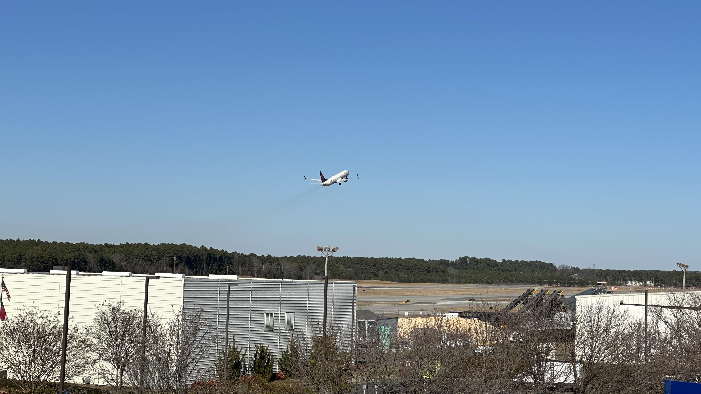
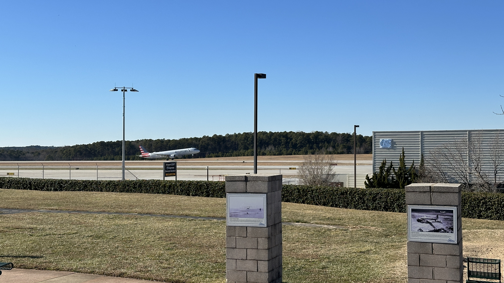
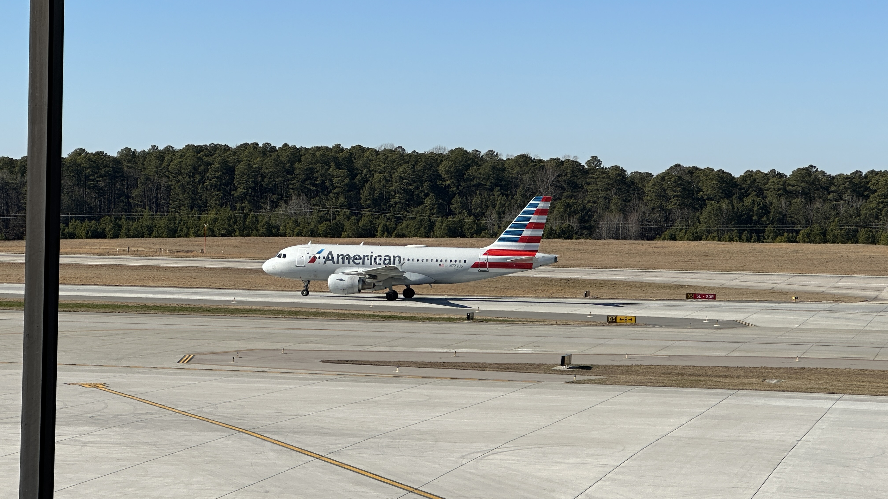

RDU Plane Spotter
RDU Airport Observation Area
This map shows the location of the RDU Airport Observation Area. This area features an observation deck overlooking a runway with telescopes, live air traffic control audio from the airport, and a small playground for children. Feel free to visit and spot some planes!
Photos from RDU Observation Area



